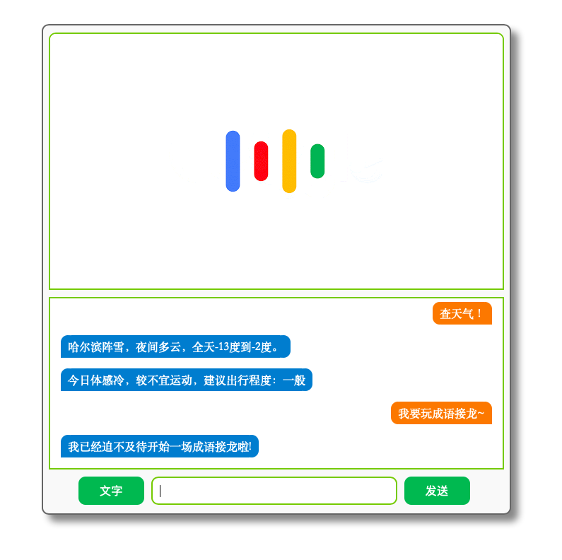

问题背景
这个问题是我在写“毕设”的时候遇到的，当然，这也是我毕设内容的基础与重点。
我是使用 Python 下的 Flask 来作为后端管理，Web 端为前端（HTML+css+JavaScript）。这是一个典型的 C/S 网络结构。
由于之前毫无 web 开发经验，所有内容均为自己查博客加试错实践得到的，这里写篇博客纪念一下这些努力。
问题描述
实现 web 端发送消息至服务器端，并获得相应响应，从而实现完整的C/S通信结构。
举一个具体的应用场景：用户发送消息至服务器端，服务器对用户发送来的信息进行处理，并返回对用户信息的响应内容。
解决方案
后端实现（Pyton.Flask）:
1
2
3
4
5
6
7
8
9
10
11
12
13
14
15
16
17
18
19
20
21
22
23
24
|
import json, datetime, flask
from flask import Flask, current_app, make_response, request, render_template
import controller
'''
对话信息处理请求
'''
@app.route('/dialog', methods=['POST'])
def process():
try:
user_message = request.get_json()['message']
res = controller.parseMessage(user_message)
data = {"time": str(datetime.datetime.now()), "func": res['func'], "code": res['code'], \
"message": res['message'], "details": res['details']}
response = make_response(flask.jsonify(data), 200)
return response
except Exception as e:
print(e)
return '{"status": "500"}'
return None
|
首先，服务器端收到发送至 http://domain.com/dialog 的请求，并通过 request.get_json() 方法来获取请求信息。针对特定字段进行读取保存。注意，这里的 get_json 是获取 JSON 格式信息。
然后，服务器的相应方法为 make_response 生成响应，并将其返回即可。其中的数据，通过 flask.jsonify 来实现数据JSON格式化。需要注意的是 make_response 方法务必设置正确的返回码，这个返回码和 http 通信状态码是一致的。之前曾在测试时，觉得直接设置为 204 单纯实现发送信息而不显式获取这个信息，但 204 状态直接使得接收端忽略这个消息，从而致使找这个 bug 找了好长时间…
前端实现（JavaScript）:
1
2
3
4
5
6
7
8
9
10
11
12
13
14
15
16
17
18
19
20
21
22
23
24
|
var httpRequest = new XMLHttpRequest();
httpRequest.open("POST", "http://127.0.0.1:5000/dialog", true);
httpRequest.setRequestHeader("Content-type","application/json");
httpRequest.onreadystatechange = function () {
if (httpRequest.readyState == 4) {
if (httpRequest.status == 200) {
var res = JSON.parse(httpRequest.responseText);
str = '<div class="bot_msg"><span>' + res.message + '</span></div>';
if (res.func == 2 && res.code == 1)
str += '<div class="bot_msg"><span>' + res.details.appendix + '</span></div>';
DialogDetails.innerHTML = DialogDetails.innerHTML + str;
DialogDetails.scrollTop = DialogDetails.scrollHeight;
} else {
alert("HTTP请求错误！错误码："+httpRequest.status);
}
} else {
;
}
}
httpRequest.send(JSON.stringify(data));
|
由代码可以看到逻辑，通过 XMLHttpRequest 对象来实现数据传输（这里采用的是 POST 方法）。当状态等均符合预期时，可以得到响应信息。当然，这些只是配置过程，这些动作真正发生时是在发送请求之后。所以，在配置完这些内容之后，注意最后要对该对象调用 send 方法以发送数据。
补充
对于一些浏览器（比如Safari）来说，浏览器请求页面时会请求页面的 favicon.ico，因此在用 Flask 框架写后端的时候，需要注意对这个请求进行响应：
1
2
3
4
5
6
| '''
处理Safari等浏览器对网页favicon.ico的请求
'''
@app.route('/favicon.ico')
def favicon():
return current_app.send_static_file('img/favicon/favicon.ico')
|
使用这样的方式，即结合前端后端来实现一个完整的 UI 程序，尽管需要做的工作比较多（比如设计接口、数据传输格式、网络通信），但从另一个角度来说，这样的做法极大地降低了代码的耦合度，便于维护与更新，是完全值得了解以及学习的。
当然，还有一个重要原因，就是用 HTML+css+JavaScript 来写页面，真的很好看！
附一张目前毕设的 demo 图，以结此文。
